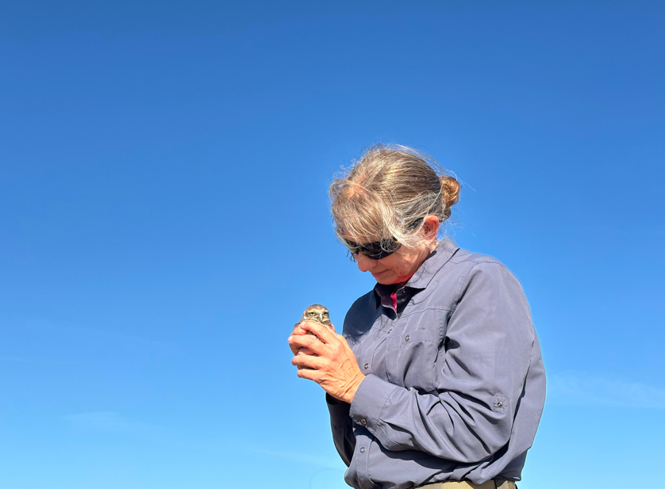

into the field
& news stories
one-on-one
In the News
Media coverage

Oregon Public Broadcasting
Umatilla burrowing owls get banded as part of a long-running research project
June 2025
Read story

Field Trips & Mentorship
Taking people into the field
I believe deeply that ecological knowledge grows more meaningful when people experience it directly. Over the years I have led many field outings for over 120 participants — including children experiencing their first wildlife encounters, groups of students interested in wildlife research, and community members learning about raptors in their home.
These trips have typically combined hands-on activities — raptor banding, nest monitoring, nest searching — with educational discussions of my research, current conservation efforts, and the biology of the species we are out working with. Additionally, I have mentored numerous trainees one-on-one in the field, teaching them various field methods and how to handle and band on their way to becoming independent field biologists.
Connecting people with wildlife has also continued outside of the field. Through the use of social media, blog posts, educational videos, and the maintenance and moderation of 24-hour live cameras on owl nests (check out Explore.org!), I have helped to connect viewers around the world to raptor research.
-
Community Field Events
Guided field trips to experience banding, nest monitoring, and more, paired with educational commentary geared for general audiences.
-
Trainee Mentorship
One-on-one mentorship of trainees in field methods, handling and banding, and data collection.
-
Tribal & Military Collaboration
Collaborative field outings and hands-on training with tribal and military personnel, building shared connection to the landscapes where the research takes place.
From the field trips


